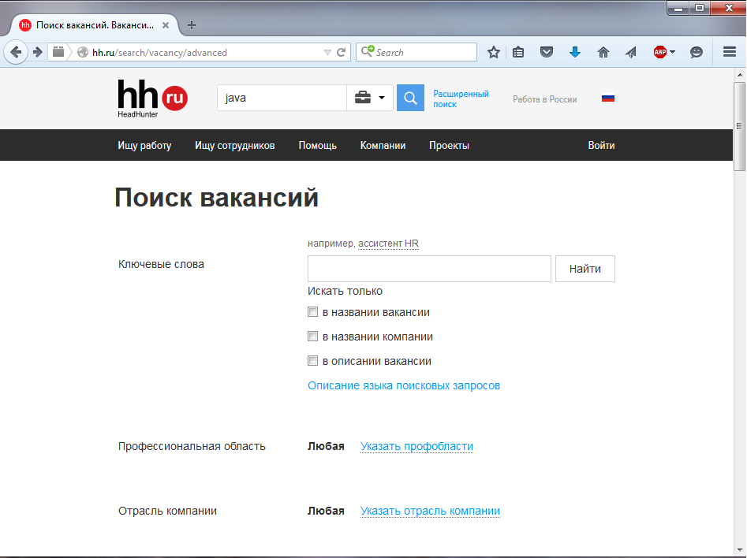

- Привет, Амиго!
- Привет, Билаабо! Так рад тебя снова видеть. Только твои лекции такие хорошие и понятные. Не то, что эта Java Memory Model.
- Да, Билаабо умеет выбирать лекции. Сегодня я расскажу тебе про switch.
- Так мне уже про него рассказывали, кажется.
- Элли. Амиго не хочет слушать лекцию про switch? Может, начнешь свою?
- Хочу, хочу. Давай про switch.
- Ок. В Java есть такой оператор - switch. Он удобен, когда тебе нужно выполнить определенные действия в зависимости от различных значений некоторой переменной.
| Пример со switch | Аналогичный код |
|---|---|
| int i = 5; switch(i) { case 1: System.out.println("один"); break; case 2: System.out.println("два"); break; case 3: System.out.println("три"); break; default: System.out.println("много"); } |
int i = 5; if (i==1) { System.out.println("один"); } else if (i==2) { System.out.println("два"); } else if (i==3) { System.out.println("три"); } else { System.out.println("много"); } |
Оператор switch позволяет прыгнуть на нужный кусок кода, если значение переданной в него переменной совпадает со значением, указанным после слова case.
Если i равно 1, то выполнение перейдет на строку помеченную «case 1».
Если i равно 2, то выполнение перейдет на строку помеченную «case 2».
Если i равно 3, то выполнение перейдет на строку помеченную «case 3».
Если переход не выполнился на какой-либо из case’ов, то выполняется на блок, помеченный «default:»
- Ясно. А справа – это та же самая логика, но реализованная с помощью if-ов?
- Ага.
- А что это еще за слово break? Ты же говорил, что его можно использовать только в циклах?
- Да, можно и здесь. При выполнении команды break мы тут же выходим из switch.
Но если команду break убрать, то все строки внутри switch’а будут выполняться до конца.
| Пример | Вывод, если i=1 | Вывод, если i=2 |
|---|---|---|
| switch(i) { case 1: System.out.println("один"); case 2: System.out.println("два"); case 3: System.out.println("три"); default: System.out.println("много"); } |
один два три много |
два три много |
Фактически, case – это метки в коде, и в switch мы прыгаем на очередную метку и… начинаем исполнять весь код до конца switch’а, или пока не встретим break.
- Т.е. если мы не напишем break, то сначала выполнится строчка, на которую мы перепрыгнули, а потом все остальные до закрывающей фигурной скобки "}". Так?
- Да.
- Ничего сложного. Но мне больше нравится с использованием if-ов. Там нет этих бессмысленных break.
- Очень часто if действительно компактнее. Но иногда switch более читабельный.
Сравни:
| Пример со switch | Аналогичный код |
|---|---|
| public String getName(int i) { switch(i) { case 1: return "один"; case 2: return "два"; case 3: return "три"; default: return "много"; } |
public String getName(int i) { if (i==1) return "один"; if (i==2) return "два"; if (i==3) return "три"; return "много" } |
- Не сказал бы, что читабельней.
- Ладно, а как насчет такого примера?
| Пример со switch | Аналогичный код |
|---|---|
| public String getName(int i) { switch(i) { case 1: case 2: return "один или два"; case 3: case 4: case 5: return "от трех до пяти"; default: return "много"; } |
public String getName(int i) { if (i==1 || i==2) return "один или два"; if (i==3 || i==4 || i==5) return "от трех до пяти"; return "много" } |
- Что-то Билаабо у тебя не очень-то и выходит. Так break можно не писать, когда return?
- Ага. return сразу приведет к выходу из метода.
- Что-то все время c if-ами выходит компактнее. Но с switch в этот раз вышло читабельней.
- Фух, наконец-то.
Еще одна вещь. Можно не писать default в конце. Тогда просто ничего не произойдет, если ни одна из меток не совпадет.
- Ну, точно, как if-else… но читабельней, гораздо читабельней!
- Отлично. Рад, что тебе понравилась моя лекция.
Чуть не забыл. Изначально внутри switch можно было использовать переменные только примитивных типов и enum’ы. Но теперь туда добавили и поддержку типа String.
- Т.е. я могу написать так:
| Пример |
|---|
| public int getNumber(String number) { switch(number) { case "one": return 1; case "two": return 2; case "three": return 3; default: return -1; } } |
- Ага. Правда, удобно?
- Да. Отличная штука switch!
- Привет, Амиго!
| Задачи |
|---|
| 1. Осваиваем switch Реализуйте логику метода switchTest: 1. Не используйте условные операторы 2. Используйте 1 switch, у которого 2 case и 1 default 3. Ожидаемый вывод: Вывод для E1.A - "it's E1.A" Вывод для E1.B - "it's E1.B" Вывод для E1.C - "it's E1.C" Вывод для E1.Y - "it's E1.Y" Вывод для E2.D - "it's E2.D" Вывод для E2.E - "it's E2.E" Вывод для E2.F - "it's E2.F" Вывод для всех других значений - "undefined" |
- Привет, Амиго!
Начнем разбираться с нитями основательней.
Чтобы любая нить не могла останавливать и прерывать все нити подряд, было введено понятие «группы нитей». Нить может оказывать влияние только на другие нити, которые содержатся в той же группе, что и она. ThreadGroup – это класс, который управляет группами нитей. Такой подход позволяет защитить нити от нежелательного изменения.
Иногда приходится выполнять код, которому нельзя 100% доверять. Поэтому удобно поместить все его нити в отдельную группу и запретить им вмешиваться в работу основной группы нитей.
Группа нитей может содержать другие группы. Это позволяет организовать все нити и группы в иерархическое дерево. В таком дереве каждая группа нитей, за исключением начальной, имеет свою группу-родителя.
У класса ThreadGroup есть методы, которые позволяют получить списков всех его нитей, а также влиять/изменять их. Когда мы создаем новую нить, и явно не указываем группу, она присоединяется к той же группе, что и нить-создатель.
Вот тебе несколько методов класса ThreadGroup:
| Метод | Описание |
|---|---|
| String getName() | Возвращает имя группы |
| ThreadGroup getParent() | Возвращает группу-родителя |
| void interrupt() | Прерывает все нити в группе. |
| boolean isDaemon() | Проверяет, является ли группа демоном |
| void setDaemon(boolean daemon) | Устанавливает группе свойство daemon |
| int activeCount() | Возвращает количество живых нитей в группе и ее подгруппах |
| int activeGroupCount() | Возвращает количество живых групп в группе и ее подгруппах |
| int enumerate(Thread[] list) | Помещает в массив все живые нити и возвращает их количество. |
| int getMaxPriority() | Возвращает максимальный приоритет для нитей в группе. |
| void setMaxPriority(int priority) | Позволяет задать максимальный приоритет нитей в группе и подгруппах. |
- Привет, Амиго!
| Задачи |
|---|
| 1. Пишем свою ThreadFactory В классе Solution создайте публичный статический класс AmigoThreadFactory, реализующий интерфейс ThreadFactory 1.Реализация интерфейсного метода - создайте и верните трэд, который должен: 1.1. не быть демоном 1.2. иметь нормальный приоритет 1.3. имя трэда должно иметь шаблон "GN-pool-A-thread-B", где GN - это имя группы, A - это номер фабрики инкрементируется в пределах класса начиная с 1, используйте AtomicInteger B - номер треда инкрементируется в пределах конкретной фабрики начиная с 1, используйте AtomicInteger 2.Каждая фабрика должна иметь ту группу тредов (ThreadGroup), в которой она была создана 3. Методы main и emulateThreadFactory не участвуют в тестировании |
| 2. ThreadLocalRandom Класс Solution будет использоваться трэдами. Реализуйте логику всех методов, используйте класс ThreadLocalRandom. getRandomIntegerBetweenNumbers должен возвращать случайный int между from и to getRandomDouble должен возвращать случайный double getRandomLongBetween0AndN должен возвращать случайный long между 0 и n |
- Продолжим наш урок. Что же такое приоритеты нитей и зачем они нужны.
В реальных задачах важность работы разных нитей может сильно различаться. Для контроля этого процесса был придуман приоритет работы. У каждой нити есть такой приоритет – это число от 1 до 10.
10 – это наивысший приоритет.
1 – самый низкий.
Если приоритет не задан, то нить получает приоритет 5 - средний.
Приоритет нити не сильно влияет на ее работу, а носит скорее рекомендательный характер. Если есть несколько спящих нитей, которые нужно запустить, то Java-машина сначала запустит нить с более высоким приоритетом.
Java-машина управляет нитями так, как посчитает нужным. Нити с низким приоритетом не будут простаивать. Просто они будут получать меньше времени, чем другие, но выполняться все равно будут.
В большинстве случаев нити всегда выполняются с одинаковым приоритетом. Попытка дать одной нити больше времени, чем другим, часто указывает на архитектурную ошибку программы.
- Ничего себе. А я уже размечтался, что сейчас назначу нити самый высокий приоритет, и она будет делать в 10 раз больше.
- А тут, оказывается, ситуация – близкая к finalize: нить с высоким приоритетом может и будет работать больше, а может и нет – никто не дает никакой гарантии.
- Кстати, а как поменять приоритет нити?
- Это очень просто. У класса Thread есть два метода:
| Метод | Описание |
|---|---|
| void setPriority(int newPriority) | Устанавливает новое значение приоритета |
| int getPriority() | Возвращает текущий приоритет нити |
У класса Thread так же есть три константы:
public final static int MIN_PRIORITY = 1;
public final static int NORM_PRIORITY = 5;
public final static int MAX_PRIORITY = 10;
- Дай, я угадаю. MIN_PRIORITY - это минимальный приоритет, MAX_PRIORITY - максимальный, а NORM_PRIORITY - приоритет по умолчанию?
- Да, именно так. Сможешь сам написать код, который выставляет нити наивысший приоритет.
- А тут есть какой-то подвох? Вроде бы так:
| Thread thread = new MyThread(); thread.setPriority(Thread. MAX_PRIORITY) thread.start(); |
- Все верно. Ничего сложного да?
- Ага. А можно устанавливать/менять приоритет нити после ее запуска? Или тут как с setDaemon – обязательно выставить значение до старта нити?
- Приоритет можно менять и после старта. Как я уже говорила, кардинальных изменений это не влечет.
- Небольшая, но интересная тема. Спасибо, Элли.
- Привет, Амиго!
| Задачи |
|---|
| 1. Magic class В пакете java.util.concurrent найдите такую реализацию List, у которой 1. итератор не содержит какие-либо данные, вставленные в список после создания итератора 2. внутри данные хранятся в виде массива 3. итератор гарантированно не бросает ConcurrentModificationException 4. допускаются все элементы включая null 5. Исправьте строку List<String> list = null ... в методе main |
| 2. Приоритеты в Threads В отдельном файле создайте класс MyThread унаследовавшись от Thread. MyThread должен: 1. иметь возможность быть созданным используя любой конструктор супер-класса (Alt+Insert) 2. приоритет у трэдов должен проставляться циклично от минимального значения до максимального значения. 3. если у трэда установлена трэд-группа(ThreadGroup), то приоритет трэда не может быть больше максимального приоритета его трэд-группы |
- Рядовой программист рано или поздно сталкивается с тем, что у него есть много маленьких задач, которые нужно выполнять время от времени.
Если ты пишешь игру, то это действия, которые выполняют отдельные персонажи.
Если пишешь веб-сервер, то это различные команды, приходящие от пользователей: загрузить фото, перекодировать его в нужный формат, применить нужный шаблон и т.д.
Все большие задачи рано или поздно разбиваются на набор маленьких и удобных задач.
Вот так на этом фоне незаметно и возникает вопрос – а как ими всеми управлять? Если в минуту нужно выполнить несколько сотен задач? Создавать для каждой задачи свою нить бывает не очень рационально. Для каждой нити Java-машина выделяет довольно много ресурсов.
Другими словами – создание и уничтожение отработавшей нити может тратить больше ресурсов и времени, чем само выполняемое задание.
Java-разработчики придумали элегантное решение этой проблемы - ThreadPoolExecutor.
ThreadPoolExecutor – это класс, который имеет внутри две вещи:
А) Очередь задач, в которую можно добавлять задачи, по мере их появления в программе.
Б) Пул-нитей (группа нитей) – которые эти задачи исполняют.
При этом нити не уничтожаются после выполнения задания, а засыпают. Чтобы начать выполнять новое задание, как только оно появится.
При создании ThreadPoolExecutor, можно задать максимальное количество нитей, которые будут созданы и максимальное количество заданий, которые можно поместить в очередь. Т.е. можно ограничить количество нитей числом 10, например, а количество задач в очереди – 100.
Как работает ThreadPoolExecutor:
1) При добавлении нового задания, оно помещается в конец очереди.
2) Если очередь заполнена будет выкинуто исключение.
3) Каждая нить после выполнения задания берет очередное задание из очереди и начинает выполнять его.
4) Если задач в очереди нет, нить засыпает до их добавления.
Подход с ограничением количества работающих нитей выгоден тем, что чем больше нитей, тем сильнее они друг другу мешают. Гораздо эффективнее иметь 5-10 нитей-исполнителей и длинную очередь задач, чем создать 100 нитей для внезапно появившейся группы задач, которые будет конкурировать друг с другом за ресурсы: память, время процессора, доступ к базе и т.п.
Пример работы такого ThreadPoolExecutor:
| Пример |
|---|
| ExecutorService service = Executors.newFixedThreadPool(2); for(int i = 0; i < 10; i++) { service.submit(new Runnable() { public void run() { // тут мы загружаем что-то тяжелое из интернета. } }); } |
- Я что-то не вижу его…
- Объект ThreadPoolExecutor создается при вызове метода newFixedThreadPool.
Так вот, работает он очень просто. Как только ты добавляешь ему задачу с помощью метода submit, он:
А) Будит спящую нить для ее выполнения, если такая есть.
Б) Создает новую нить для выполнения задания, если ее нет.
В) Если достигнут максимум нитей, то просто кладет задачу в конец очереди.
Я специально написала в примере – тут мы загружаем что-то тяжелое из интернета. Если у нас есть 100 задач «скачать что-то большое из интернета», то нет смысла запускать много таких задач одновременно – мы упремся в ограничение ширины интернет-канала. В таком случает пары нитей должно быть достаточно. Именно это ты и видишь в примере выше:
| ExecutorService service = Executors.newFixedThreadPool(2); |
- Оказывается, работать с кучей задач не так уж и сложно.
- Да. Даже легче, чем ты можешь себе представить. Но об этом тебе расскажет Ким.
- Привет, Амиго!
| Задачи |
|---|
| 1. Знакомство с Executors 1. В методе main создай фиксированный пул из 5 трэдов используя класс Executors. 2. В цикле отправь на исполнение в пул 10 тасок Runnable. 3. У каждой таски в методе run вызови метод doExpensiveOperation с порядковым номером таски начиная с 1, см. пример вывода 4. Запрети добавление новых тасок на исполнение в пул (метод shutdown) 5. Дай экзэкьютору 5 секунд на завершение всех тасок (метод awaitTermination и параметр TimeUnit.SECONDS) Не должно быть комментариев кроме приведенного output example |
| 2. Знакомство с ThreadPoolExecutor 1. В методе main создай очередь LinkedBlockingQueue<Runnable> 2. В цикле добавь в очередь 10 тасок Runnable. 3. У каждой таски в методе run вызови метод doExpensiveOperation с порядковым номером таски начиная с 1, см. пример вывода 4. Создай объект ThreadPoolExecutor со следующими параметрами: - основное количество трэдов (ядро) = 3 - максимальное количество трэдов = 5 - время удержания трэда живым после завершения работы = 1000 - тайм-юнит - миллисекунды - созданная в п.1. очередь с тасками 5. Запусти все трэды, которые входят в основное кол-во трэдов - ядро), используй метод prestartAllCoreThreads 6. Запрети добавление новых тасок на исполнение в пул (метод shutdown) 7. Дай экзэкьютору 5 секунд на завершение всех тасок (метод awaitTermination и параметр TimeUnit.SECONDS) Не должно быть комментариев кроме приведенного output example |
- Привет, Амиго!
Ничего нельзя создать идеальным с первого раза. Это касается и нитей. Со временем разработчики Java убедились, что интерфейс Runnable не идеален. Он не поддерживал перебрасывание исключений и не позволял узнать результат выполнения задачи…
Интерфейс Runnable скорее подходит для больших независимых задач, чем для маленьких подзадач, которых хочется запустить с десяток одновременно, а потом собрать с них результаты их работы.
Поэтому был придуман интерфейс Callable. Он гораздо лучше подходит для параллельного выполнения небольших задач, чем Runnable и Thread, еще и потому, что является generic-интерфейсом.
Вот типичный класс, который реализует интерфейс:
| Пример |
|---|
| class ReverseString implements Callable<String> { String str; ReverseString(String str) { this.str = str; } public String call() throws Exception { StringBuilder builder = new StringBuilder(str); builder.reverse(); return builder.toString(); } } |
В отличие от Runnable, тут мы должны переопределить метод call, который возвращает результат, заданный типом-параметром. Такой подход гораздо удобнее, чем метод run интерфейса Runnable, который возвращает void. Иногда разработчикам приходилось придумывать различные «обходные пути», чтобы получить результат работы нити.
- Ясно.
- А теперь смотри, как Callable может работать в паре с ThreadPoolExecutor:
Во-первых, метод submit класса ThreadPoolExecutor возвращает параметризированный объект типа Future. Этот объект можно использовать, чтобы узнать, завершилось ли уже выполнение задачи, а также, чтобы получить результат ее выполнения.
Вот как это работает:
| Пример |
|---|
| //1. Создаем ThreadPoolExecutor ExecutorService service = Executors.newFixedThreadPool(5); //2 помещаем в него задачу для выполнения Future<String> task = service.submit(new ReverseString("Amigo")); //3 ждем пока задача выполнится while(!task.isDone()) { Thread.sleep(1); } //4 пробуем получить результат задачи //получим или результат или исключение, если оно было при выполнении задачи try { System.out.println("Развернутая строка : " + task.get()); } catch (Exception ie) { ie.printStackTrace(System.err); } //5 останавливаем ThreadPool. service.shutdown(); |
- Круто! Особенно класс Future понравился. А какие у него есть методы?
- Вот самые интересные:
| Метод | Описание |
|---|---|
| boolean cancel(boolean mayInterrupt); | Останавливает задачу. |
| boolean isCancelled(); | Возвращает true, если задача была остановлена. |
| boolean isDone(); | Возвращает true, если выполнение задачи завершено. |
| V get() throws InterruptedException, ExecutionException; | Возвращает результат вызова метода call или кидает исключение, если оно было. |
- Круто! Так задачи еще и останавливать можно.
- Не сильно на это надейся – не каждую нить можно остановить. Но если задача еще в очереди, то это отлично сработает.
- Такой подход мне нравится. Гораздо удобнее, чем самому создавать нити и потом пробовать вытянуть из них результат.
- Отлично. На этом сегодня и закончим.
- Привет, Амиго!
| Задачи |
|---|
| 1. Осваиваем Callable Реализуйте логику метода getTask, который должен возвращать объект Callable. Объект Callable должен вычислять сумму всех чисел от 1 до переданного числа i включая его, и возвращать его в виде строки Метод main не участвует в тестировании |
| 2. Plants vs Zombies 1. Почитайте про java.util.concurrent.Phaser 2. Расставь методы в нужных местах -arriveAndDeregister() - начинает запускать методы run у тасок -arriveAndAwaitAdvance() - ждет, когда все трэды будут созданы Пример вывода см. в output.txt Логика: Сначала все персонажи присоединяются к игре. После того, как все персонажи присоединятся к игре и готовы играть, выводится фраза "Игра началась!". После этого персонажи вступают в игру, после чего умирают. Не должно быть закоментированного кода |
- Привет, Амиго!
Продолжаем наши уроки – учимся гуглить.
Вот тебе несколько заданий:
| Задания на поиск в интернете: | |
|---|---|
| 1 | Как получить список живых нитей из группы ThreadGroup? |
| 2 | Как получить список мертвых нитей из группы ThreadGroup? |
| 3 | Аналоги ThreadPoolExecutor? |
| 4 | Что такое ThreadWorker? |
| 5 | Что такое ThreadPool? |
| 6 | Что такое FactoryMethod? |
| 7 | Что такое DDD? |
| 8 | Что такое TDD? |
| 9 | Что такое dump? |
| 10 | Что такое Pool? |
- Привет, Амиго!
Вот тебе дополнительный материал по теме.
- Привет, Амиго!
- Привет Хулио, чем занимаешься?
- Занимаюсь общественно полезным трудом.
- Каким?
- Лежу, смотрю видео и никому не мешаю.
- Двигайся, мне тоже захотелось так поработать.
- Привет, Амиго!
| Вопросы к собеседованиям | |
|---|---|
| 1 | Какие приоритеты нитей бывают? |
| 2 | Можно ли остановить нить, снизив ее приоритет до 0? |
| 3 | Зачем нужен класс ThreadGroup? |
| 4 | В какой группе нитей состоит main-thread? |
| 5 | Что такое паттерн ThreadPool |
| 6 | Зачем нужен класс ThreadPoolExecutor? |
| 7 | Сколько способов создать нить вы знаете? (Thread, Runnable, Callable<T>) |
| 8 | Для чего используется класс Future? |
| 9 | В чем преимущества Callable над Runnable? |
| 10 | Можно ли отменить выполнение задачи, если использовать класс Future? |
- Привет, Амиго. Сегодня ты познаешь всю мощь Java!
Что может быть лучше, чем найти новый полезный сайт?? Только написать пограмму, которая автоматически вытягивает из него всю полезную информацию!
Допустим, ты решил сделать сайт для поиска работы, который будет показывать все вакансии, размещенные на десятках других сайтов. Идея, конечно, хорошая, но вот только те сайты ни за что не захотят делиться с тобой своими данными.
- Ага. Кто же захочет?? Они же на этом зарабатывают!
- Ага. Не стоит ждать милостей от природы, взять их у нее – наша задача!
Мы напишем программу на Java, которая вытаскивает все нужные нам данные из страницы сайта.
- А какой сайт будем ломать?
- Ну, во-первых, ломать мы ничего не будем. Мы будем брать данные, которые и так в публичном доступе. А во-вторых, будем парсить сайт hh.ru. Пусть считает наш выбор признанием его популярности.
Ему это даже выгодно. Каждый программист накануне поиска работы несколько дней просидит на этом сайте. В 50% случаев человек будет и в следующий раз искать работу именно на этом сайте.
- Так-так… А сайт ничего себе – куча полезной информации. И как же нам ее получить?
- Не нам, а вам!
Твоя задача, боец, запустить IntelliJ IDEA и приступить к выполнению этого ответственного и секретного задания.
- Есть приступить, товарищ капитан!